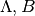

Example: Defining A Coordinate Frame for the Sgr Dwarf¶
This document describes in detail how to subclass and define a custom
spherical coordinate frame, as discussed in Using and Designing Coordinate Frames and the
docstring for BaseCoordinateFrame. In this
example, we will define a coordinate system defined by the plane of orbit of
the Sagittarius Dwarf Galaxy (hereafter Sgr; as defined in Majewski et
al. 2003). The Sgr coordinate system is often referred to in terms of two
angular coordinates, .
We need to define a subclass of BaseCoordinateFrame
that knows the names and units of the coordinate system angles in each of
the supported representations. In this case we support
SphericalRepresentation with “Lambda” and “Beta”.
Then we have to define the
transformation from this coordinate system to some other built-in system.
Here we will use Galactic coordinates, represented by the
Galactic class.
The first step is to create a new class, which we’ll call
Sagittarius and make it a subclass of
BaseCoordinateFrame:
import numpy as np
from numpy import cos, sin
from astropy.coordinates import frame_transform_graph
from astropy.coordinates.angles import rotation_matrix
import astropy.coordinates as coord
import astropy.units as u
class Sagittarius(coord.BaseCoordinateFrame):
"""
A Heliocentric spherical coordinate system defined by the orbit
of the Sagittarius dwarf galaxy, as described in
http://adsabs.harvard.edu/abs/2003ApJ...599.1082M
and further explained in
http://www.astro.virginia.edu/~srm4n/Sgr/.
Parameters
----------
representation : `BaseRepresentation` or None
A representation object or None to have no data (or use the other keywords)
Lambda : `Angle`, optional, must be keyword
The longitude-like angle corresponding to Sagittarius' orbit.
Beta : `Angle`, optional, must be keyword
The latitude-like angle corresponding to Sagittarius' orbit.
distance : `Quantity`, optional, must be keyword
The Distance for this object along the line-of-sight.
"""
default_representation = coord.SphericalRepresentation
frame_specific_representation_info = {
'spherical': [coord.RepresentationMapping('lon', 'Lambda'),
coord.RepresentationMapping('lat', 'Beta'),
coord.RepresentationMapping('distance', 'distance')],
'unitspherical': [coord.RepresentationMapping('lon', 'Lambda'),
coord.RepresentationMapping('lat', 'Beta')]
}
Line by line, the first few are simply imports. Next we define the class
as a subclass of BaseCoordinateFrame. Then we
include a descriptive docstring. The final lines are class-level
attributes that specify the default representation for the data and
mappings from the attribute names used by representation objects to the
names that are to be used by Sagittarius. In this case we override
the names in the spherical representations but don’t do anything with
other representations like cartesian or cylindrical.
Next we have to define the transformation to some other built-in coordinate
system; we will use Galactic coordinates. We can do this by defining functions
that return transformation matrices, or by simply defining a function that accepts
a coordinate and returns a new coordinate in the new system. We’ll start by
constructing the rotation matrix, using the helper function
rotation_matrix:
# Define the Euler angles (from Law & Majewski 2010)
SGR_PHI = np.radians(180+3.75)
SGR_THETA = np.radians(90-13.46)
SGR_PSI = np.radians(180+14.111534)
# Generate the rotation matrix using the x-convention (see Goldstein)
D = rotation_matrix(SGR_PHI, "z", unit=u.radian)
C = rotation_matrix(SGR_THETA, "x", unit=u.radian)
B = rotation_matrix(SGR_PSI, "z", unit=u.radian)
SGR_MATRIX = np.array(B.dot(C).dot(D))
This is done at the module level, since it will be used by both the transformation from Sgr to Galactic as well as the inverse from Galactic to Sgr. Now we can define our first transformation function:
# Galactic to Sgr coordinates
@frame_transform_graph.transform(coord.FunctionTransform, coord.Galactic, Sagittarius)
def galactic_to_sgr(gal_coord, sgr_frame):
""" Compute the transformation from Galactic spherical to
heliocentric Sgr coordinates.
"""
l = np.atleast_1d(gal_coord.l.radian)
b = np.atleast_1d(gal_coord.b.radian)
X = np.cos(b)*np.cos(l)
Y = np.cos(b)*np.sin(l)
Z = np.sin(b)
# Calculate X,Y,Z,distance in the Sgr system
Xs, Ys, Zs = SGR_MATRIX.dot(np.array([X, Y, Z]))
Zs = -Zs
# Calculate the angular coordinates lambda,beta
Lambda = np.arctan2(Ys,Xs)*u.radian
Lambda[Lambda < 0] = Lambda[Lambda < 0] + 2.*np.pi*u.radian
Beta = np.arcsin(Zs/np.sqrt(Xs*Xs+Ys*Ys+Zs*Zs))*u.radian
return Sagittarius(Lambda=Lambda, Beta=Beta,
distance=gal_coord.distance)
The decorator
@frame_transform_graph.transform(coord.FunctionTransform,
coord.Galactic, Sagittarius) registers this function on the
frame_transform_graph as a transformation. Inside the function, we
simply follow the same procedure as detailed by David Law’s
transformation code.
Note that in this case, both coordinate systems are heliocentric, so we
can simply copy any distance from the Galactic
object.
We then register the inverse transformation by using the transpose of the rotation matrix (which is faster to compute than the inverse):
# Sgr to Galactic coordinates
@frame_transform_graph.transform(coord.FunctionTransform, Sagittarius, coord.Galactic)
def sgr_to_galactic(sgr_coord, gal_frame):
""" Compute the transformation from heliocentric Sgr coordinates to
spherical Galactic.
"""
L = np.atleast_1d(sgr_coord.Lambda.radian)
B = np.atleast_1d(sgr_coord.Beta.radian)
Xs = cos(B)*cos(L)
Ys = cos(B)*sin(L)
Zs = sin(B)
Zs = -Zs
X, Y, Z = SGR_MATRIX.T.dot(np.array([Xs, Ys, Zs]))
l = np.arctan2(Y,X)*u.radian
b = np.arcsin(Z/np.sqrt(X*X+Y*Y+Z*Z))*u.radian
l[l<=0] += 2*np.pi*u.radian
return coord.Galactic(l=l, b=b, distance=sgr_coord.distance)
Now that we’ve registered these transformations between Sagittarius
and Galactic, we can transform between any
coordinate system and Sagittarius (as long as the other system has a
path to transform to Galactic). For example, to
transform from ICRS coordinates to Sagittarius, we simply:
>>> import astropy.units as u
>>> import astropy.coordinates as coord
>>> icrs = coord.ICRS(280.161732*u.degree, 11.91934*u.degree)
>>> icrs.transform_to(Sagittarius)
<Sagittarius Coordinate: (Lambda, Beta, distance) in (deg, deg, )
(346.8182733552503, -39.28366798041541, 1.0)>
The complete code for the above example is included below for reference.
See Also¶
- Majewski et al. 2003, “A Two Micron All Sky Survey View of the Sagittarius Dwarf Galaxy. I. Morphology of the Sagittarius Core and Tidal Arms”, http://arxiv.org/abs/astro-ph/0304198
- Law & Majewski 2010, “The Sagittarius Dwarf Galaxy: A Model for Evolution in a Triaxial Milky Way Halo”, http://arxiv.org/abs/1003.1132
- David Law’s Sgr info page http://www.astro.virginia.edu/~srm4n/Sgr/
Complete Code for Example¶
1 2 3 4 5 6 7 8 9 10 11 12 13 14 15 16 17 18 19 20 21 22 23 24 25 26 27 28 29 30 31 32 33 34 35 36 37 38 39 40 41 42 43 44 45 46 47 48 49 50 51 52 53 54 55 56 57 58 59 60 61 62 63 64 65 66 67 68 69 70 71 72 73 74 75 76 77 78 79 80 81 82 83 84 85 86 87 88 89 90 91 92 93 94 95 96 97 98 99 100 101 102 103 104 105 106 107 108 109 110 111 112 113 114 115 116 117 118 | # coding: utf-8
""" Astropy coordinate class for the Sagittarius coordinate system """
from __future__ import division, print_function
__author__ = "adrn <adrn@astro.columbia.edu>"
# Third-party
import numpy as np
from numpy import cos, sin
from astropy.coordinates import frame_transform_graph
from astropy.coordinates.angles import rotation_matrix
import astropy.coordinates as coord
import astropy.units as u
__all__ = ["Sagittarius"]
class Sagittarius(coord.BaseCoordinateFrame):
"""
A Heliocentric spherical coordinate system defined by the orbit
of the Sagittarius dwarf galaxy, as described in
http://adsabs.harvard.edu/abs/2003ApJ...599.1082M
and further explained in
http://www.astro.virginia.edu/~srm4n/Sgr/.
Parameters
----------
representation : `BaseRepresentation` or None
A representation object or None to have no data (or use the other keywords)
Lambda : `Angle`, optional, must be keyword
The longitude-like angle corresponding to Sagittarius' orbit.
Beta : `Angle`, optional, must be keyword
The latitude-like angle corresponding to Sagittarius' orbit.
distance : `Quantity`, optional, must be keyword
The Distance for this object along the line-of-sight.
"""
default_representation = coord.SphericalRepresentation
frame_specific_representation_info = {
'spherical': [coord.RepresentationMapping('lon', 'Lambda'),
coord.RepresentationMapping('lat', 'Beta'),
coord.RepresentationMapping('distance', 'distance')],
'unitspherical': [coord.RepresentationMapping('lon', 'Lambda'),
coord.RepresentationMapping('lat', 'Beta')]
}
# Define the Euler angles (from Law & Majewski 2010)
phi = np.radians(180+3.75)
theta = np.radians(90-13.46)
psi = np.radians(180+14.111534)
# Generate the rotation matrix using the x-convention (see Goldstein)
D = rotation_matrix(phi, "z", unit=u.radian)
C = rotation_matrix(theta, "x", unit=u.radian)
B = rotation_matrix(psi, "z", unit=u.radian)
sgr_matrix = np.array(B.dot(C).dot(D))
# Galactic to Sgr coordinates
@frame_transform_graph.transform(coord.FunctionTransform, coord.Galactic, Sagittarius)
def galactic_to_sgr(gal_coord, sgr_frame):
""" Compute the transformation from Galactic spherical to
heliocentric Sgr coordinates.
"""
l = np.atleast_1d(gal_coord.l.radian)
b = np.atleast_1d(gal_coord.b.radian)
X = cos(b)*cos(l)
Y = cos(b)*sin(l)
Z = sin(b)
# Calculate X,Y,Z,distance in the Sgr system
Xs, Ys, Zs = sgr_matrix.dot(np.array([X, Y, Z]))
Zs = -Zs
# Calculate the angular coordinates lambda,beta
Lambda = np.arctan2(Ys, Xs)*u.radian
Lambda[Lambda < 0] = Lambda[Lambda < 0] + 2.*np.pi*u.radian
Beta = np.arcsin(Zs/np.sqrt(Xs*Xs+Ys*Ys+Zs*Zs))*u.radian
return Sagittarius(Lambda=Lambda, Beta=Beta,
distance=gal_coord.distance)
# Sgr to Galactic coordinates
@frame_transform_graph.transform(coord.FunctionTransform, Sagittarius, coord.Galactic)
def sgr_to_galactic(sgr_coord, gal_frame):
""" Compute the transformation from heliocentric Sgr coordinates to
spherical Galactic.
"""
L = np.atleast_1d(sgr_coord.Lambda.radian)
B = np.atleast_1d(sgr_coord.Beta.radian)
Xs = cos(B)*cos(L)
Ys = cos(B)*sin(L)
Zs = sin(B)
Zs = -Zs
X, Y, Z = sgr_matrix.T.dot(np.array([Xs, Ys, Zs]))
l = np.arctan2(Y, X)*u.radian
b = np.arcsin(Z/np.sqrt(X*X+Y*Y+Z*Z))*u.radian
l[l<0] += 2*np.pi*u.radian
return coord.Galactic(l=l, b=b, distance=sgr_coord.distance)
if __name__ == "__main__":
# Example use case for our newly defined coordinate class
icrs = coord.ICRS(152.88572*u.degree, 11.57281*u.degree)
sgr = icrs.transform_to(Sagittarius)
print(sgr)
|